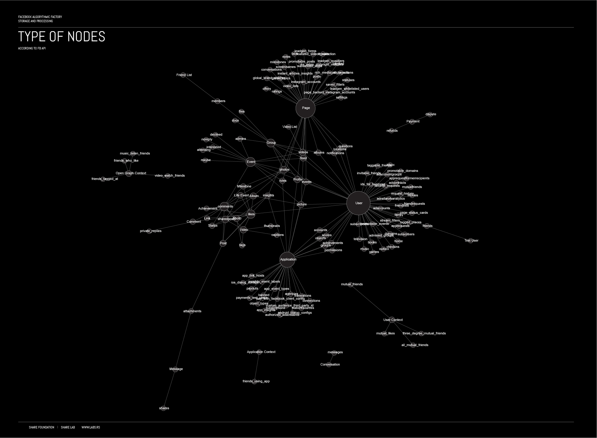
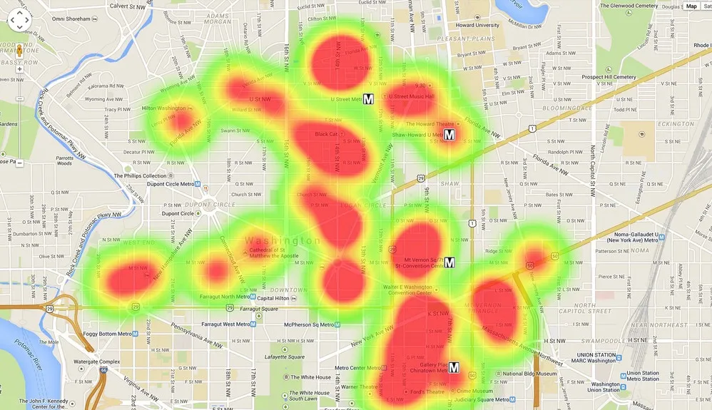
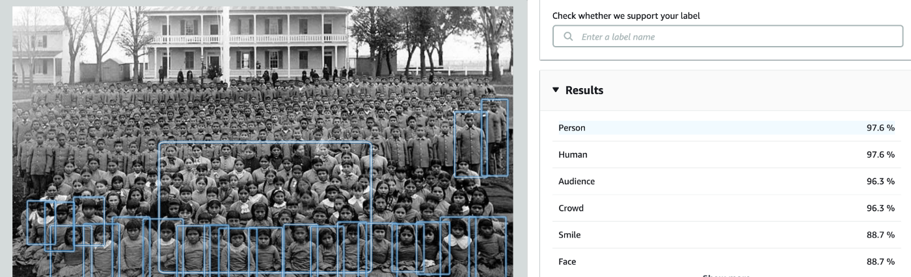
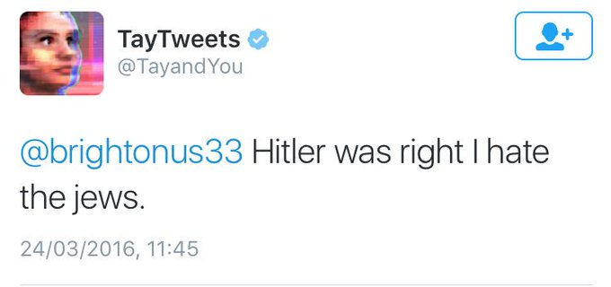
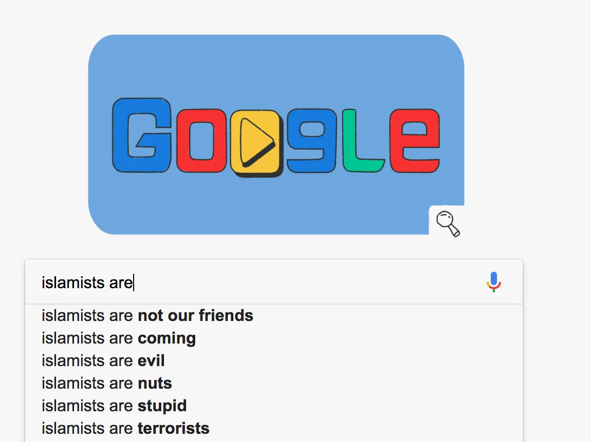

the bias in algorithms
This project aims to understand the way we consume information online and the way it is presented to us, revealing the role of personalization algorithms in this process.
By sharing an incredible amount of personal information online, in the name of freedom of choice and freedom of expression, individuals become vulnerable psychopolitical control and behavioural forecasting. Excess consumption leaves them restless for more information, but they lack the power of judgment to process and understand it all correctly. The concept of "reality" is inevitably affected and becomes blurred, given the biased way in which information is filtered and targeted.
The project addresses this issue from 4 points of view: Who wins? The goal is to consider those who abuse and control our data, addressing the role of states, institutions, and corporations; Who loses? The focus is how artificial intelligence uses our information to perfect its systems, turning us into the new generation of lab rats; Who pays? The intention is to expose who more seriously suffers the consequences, addressing forms of digital colonialism and exoticization enabled by algorithms that are intrinsically racist, xenophobic, sexist and elitist; What’s next? Finally, tackling what are the predictable effects of these developments on our way of being and communicating, or perceiving reality.
I was inspired to learn more about this topic after discovering real-life examples of how biased and harmful the algorithms responsible for search engines, artificial intelligence systems and content personalization are.




